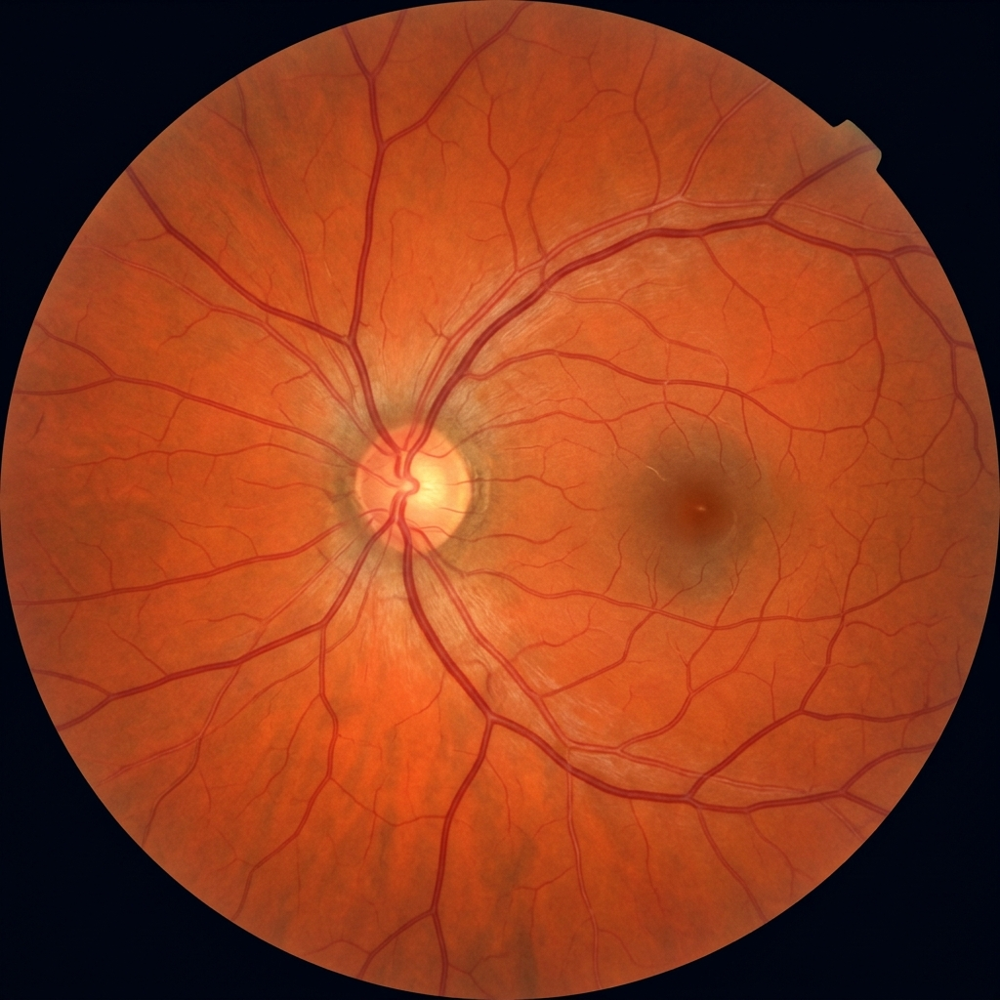
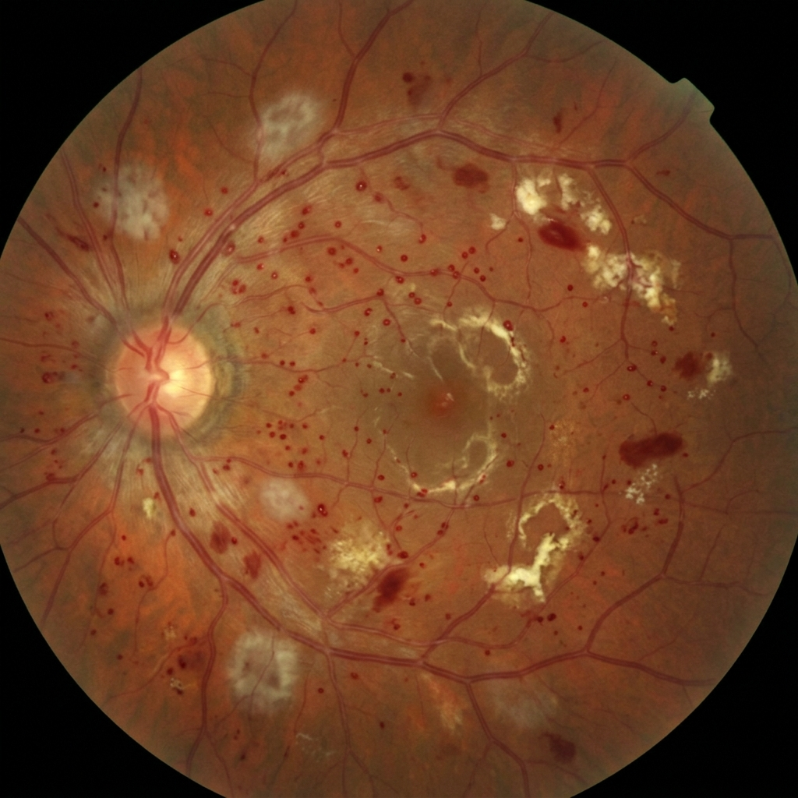
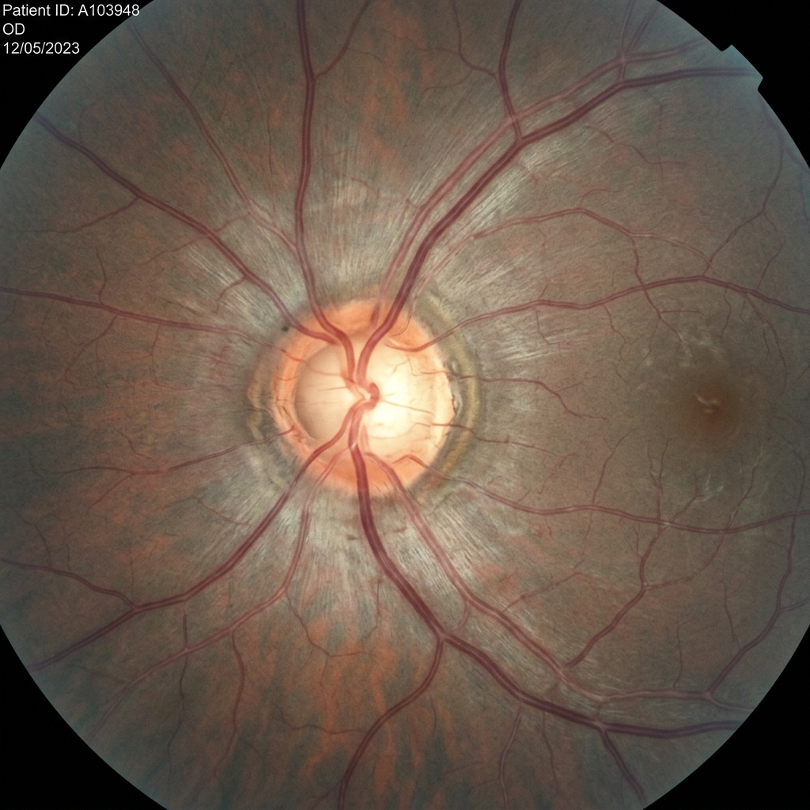

Carga y Procesamiento de Retinografía
Formato: JPG / PNG (224x224)
Imágenes de Prueba Clínicas (Presets)

1. Ojo Sano
2. Retinopatía D.
3. GlaucomaArrastra una retinografía aquí o haz clic
Imágenes de fondo de ojo no midriáticas
Resultado y Clasificación Multiclase
FastAPI Inference Engine
Desglose de Probabilidad Algorítmica (Softmax)
🟢 Normal / Sin Hallazgos
98.4%
🟡 Retinopatía Diabética
1.2%
🔴 Glaucoma
0.4%
Sugerencia de Soporte Clínico (2da Opinión)
No se observan microaneurismas ni excavación glaucomatosa. Se sugiere control rutinario preventivo en 12 meses.
Registro de Pacientes y Seguimiento Longitudinal
| DNI | Paciente | Edad | Fecha Triaje | Diagnóstico IA | Confianza | Prioridad | Acciones |
|---|---|---|---|---|---|---|---|
| 72849102 | Carlos Mendoza Ríos | 58 años | 22/08/2026 | Retinopatía Diabética | 95.8% | Alta | |
| 41920384 | Ana María Paredes | 64 años | 22/08/2026 | Glaucoma | 95.3% | Urgente | |
| 45129304 | Jorge Luis Mayhua | 42 años | 21/08/2026 | Normal (Sano) | 98.4% | Rutinaria | |
| 10293847 | María Salome Castro | 61 años | 20/08/2026 | Retinopatía Diabética | 94.1% | Alta |
1,248
Triajes Realizados
96.8%
Precisión Diagnóstica
2.4 min
Tiempo Medio de Triaje
342
Casos Graves Derivados
Impacto Operativo en Salud Pública (Lima Metropolitana)
La implementación del sistema CAD reduce drásticamente el cuello de botella en los consultorios oftalmológicos de Lima Metropolitana. Al desplazar el filtro inicial hacia el nivel de atención primaria mediante IA asíncrona, se ha evitado la congestión en especialistas y se ha reducido el tiempo promedio de derivación de 120 días a menos de 7 días para pacientes con riesgo inminente de pérdida visual.
Arquitectura del Sistema (Tesis Proposal)
- Capa de Presentación (Frontend): Angular con TypeScript, Interceptores HTTP y Sanitización XSS.
- Capa de Aplicación (Backend): FastAPI en Python con endpoints asíncronos y Pydantic.
- Motor de IA / Inferencia: DenseNet121 preentrenado con Transfer Learning en TensorFlow/Keras.
- Persistencia & Cloud: PostgreSQL y Amazon Web Services (AWS S3 & EC2).
Resultados del Benchmarking Tecnológico
- DenseNet121: Puntaje 4.35 / 5.00 (Mejor balance precisión/eficiencia vs ResNet50).
- FastAPI: Puntaje 4.60 / 5.00 (Integración nativa Python + OpenAPI automática).
- Angular: Puntaje 4.85 / 5.00 (Arquitectura empresarial prescriptiva y segura).